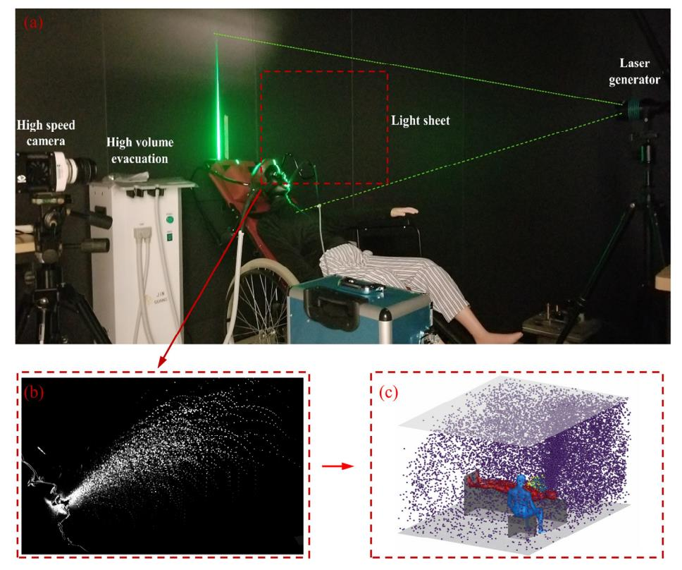
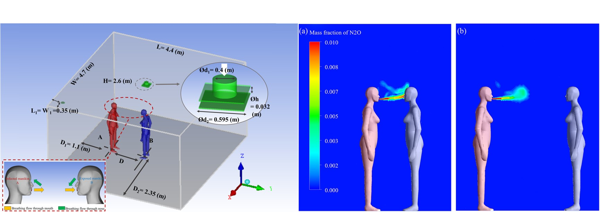
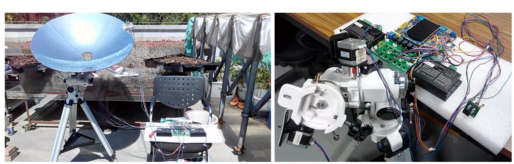

.jpg)
Xiujie LI
Currently, I am a Research Fellow in the Department of Building Environment and Energy Engineering (BEEE) and conducted postdoctoral research with PolyU Postdoc Matching Fellowship. I received the Ph.D. degree in August 2023 at Hong Kong Polytechnic University, working with Prof. Mak Cheuk Ming. My current study has been dedicated to Indoor Air Quality, Building ventilation, CFD, etc. Before that, I did my Master degree at the School of Environment and Energy, Peking University. Through collaboration with the government, public health agencies, health institutes, universities, and industry partners, we are seeking every possibility to combat this global indoor air crisis.
News
Recent Projects
In my doctoral studies, I work to investigate airborne transmission in short-term events and atomization mechanisms of medical procedures through particle image velocimetry (PIV) and computational fluid dynamics (CFD). The findings can give policymakers insights into developing targeted mitigation measures and reducing the cross-infection risks.

Experiment chamber | Overlaying image sequence
I would like to say, Institute Fallow Time! The initial idea came up during the COVID-19 pandemic when routine dental service was suspended. By investigating the atomization and transmission mechanisms of dental aerosol-generating procedures (AGPs), we now can evaluate the recommended precautionary measures in dental clinics. In addition, to make the story more complete, we also measured the airborne lifetime and escaped rates of suspended particles. The results are quite critical, we significantly recommend to institute the Fallow time (FT) between dental patients' appointments. The FT is dictated when the number of suspended particles drops to the level that the next patient can safely enter after AGPs. Now, we are working on more applications to reduce the required FT by considering different evnrionmental conditions and the cooperation of mitigation measures, like the high-volume evacuation and air purifiers.

Simulation Scenerio | Airflow interaction
Numerous short-term exposure events in public spaces were reported during the COVID-19 pandemic, and the cross-transmission of the Delta variant of SARS-CoV-2 is reported to occur even in 15 seconds. In the project, we aim to investigate the dynamics of airborne transmission in short-term events when a steady state is not reached before the end of the events. The Large-eddy simulation (LES) is employed in this study. The results are quite encouraging, exposure index in short-term events constantly varies over time, especially within the first 1/ACH (air changes per hour) hour of exposure between occupants in close proximity. Direct airborne transmission is observed with significant randomness, discreteness, localization, and high-risk characteristics. After decoupling analysis of two airborne transmission routes, direct airborne transmission is the predominated route in short-term events. The general dilution ventilation has a relatively limited efficiency in mitigating the risk of direct airborne transmission, but determines largely the occurrence time of the indirect one.

Solar Concentration System | Dual axis tracking system
This project aims to design an active daylight harvesting system for building. Both the numerical simulation and field experiment are employed to assess the performance of daylight systems in building energy consumption and thermal comfort. After retrofiting building using our system, the effective lighting time is more than doubled than before.
Research
My research interest lies in airborne transmission of virus, building ventilation, indoor air quality, and built environment using Particle Image Velocimetry (PIV), Computational Fluid Dynamics (CFD), and so on.
Journal Papers:
- Cross-infection risk assessment in dental clinic: Numerical investigation of emitted droplets during different atomization procedures
Xiujie Li, Cheuk Ming Mak*, Zhengtao Ai, Kuen Wai Ma, Hai Ming Wong
Journal of Building Engineering 2023 | paper - Numerical investigation of the impacts of environmental conditions and breathing rate on droplet transmission during dental service
Xiujie Li, Cheuk Ming Mak*, Zhengtao Ai, Kuen Wai Ma, Hai Ming Wong
Physics of Fluids 2023 | paper - Airborne transmission during short-term events: Direct route over indirect route
Xiujie Li, Zhengtao Ai*, Jinjun Ye, Cheuk Ming Mak, Hai Ming Wong
Building Simulation 2022 | paper - Airborne transmission of exhaled pollutants during short-term events: Quantitatively assessing inhalation monitor points
Xiujie Li, Cheuk Ming Mak*, Zhengtao Ai, Hai Ming Wong
Building and Environment 2022 | paper - How the high-volume evacuation alters the flow-field and particle removal characteristics in the mock-up dental clinic
Xiujie Li, Cheuk Ming Mak, Kuen Wai Ma, Hai Ming Wong*
Building and Environment 2021 | paper - Restoration of dental services after COVID-19: The fallow time determination with laser light scattering
Xiujie Li, Cheuk Ming Mak*, Kuen Wai Ma, Hai Ming Wong
Sustainable Cities and Society 2021 |paper - Evaluating flow-field and expelled droplets in the mockup dental clinic during the COVID-19 pandemic
Xiujie Li, Cheuk Ming Mak, Kuen Wai Ma, Hai Ming Wong*
Physics of Fluids 2021 "Featured Work & 封面文章" | paper - Design and analysis of an active daylight harvesting system for building
Xiujie Li, Yeyan Wei, Junbin Zhang, Peng Jin*
Renewable Energy 2019 | paper - Numerical modeling of tubular daylighting devices
Biao Chen, Yeyan Wei, Xiujie Li, Runze Cao, Peng Jin
Optik 2017 | paper
Conference Papers:
- Performance of mitigation measures on emitted droplets in dental atomization procedure
Xiujie Li, Cheuk Ming Mak, Hai Ming Wong
IAQVEC 2023 | paper - Cross-Infection Risk Analysis in Dental Clinics: Atomization and Transmission Mechanisms of Emitted Droplet
Xiujie Li, Cheuk Ming Mak, Hai Ming Wong
PRSC 2023 | paper - The airborne lifetime and spatial-temporal distribution of emitted droplets in dental procedures
Xiujie Li, Cheuk Ming Mak, Zhengtao Ai, Kuen Wai Ma, Hai Ming Wong
COBEE 2022 | paper - Design and analysis of an active daylighting system for retrofiting building
Xiujie Li, Yeyan Wei, Junbin Zhang, Peng Jin
SEEP 2018 | paper
Bio/CV
Education:
Hong Kong Polytechnic University Hong Kong, China.
Peking University Beijing, China.
Chang'an University Xi'an, China.
Teaching Experence:
BSE2217 Heat and Mass Transfer, Hong Kong Polytechnic University
BRE 349 Building Services I, Hong Kong Polytechnic University